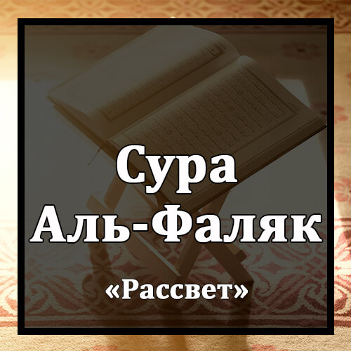

Бисмилляхир-Рахманир-Рахиим
Во имя Аллаха Милостивого и Милосердного!
Куль А`узу Бираббиль-Фаляк.
Скажи: "Прибегаю к защите Господа рассвета
Мин Шарри Ма Халяк.
от зла того, что Он сотворил,
Уа Мин Шарри Гасикыйн Иза Уакаб.
от зла мрака, когда он наступает,
Уа Мин Шаррин-Наффасати Филь-`Укад.
от зла колдуний, дующих на узлы,
Уа Мин Шарри Хасидин Иза Хасад.
от зла завистника, когда он завидует".